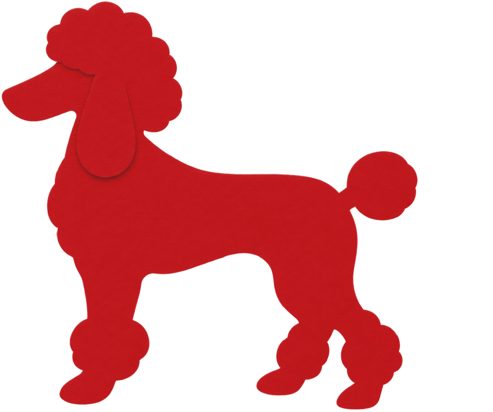
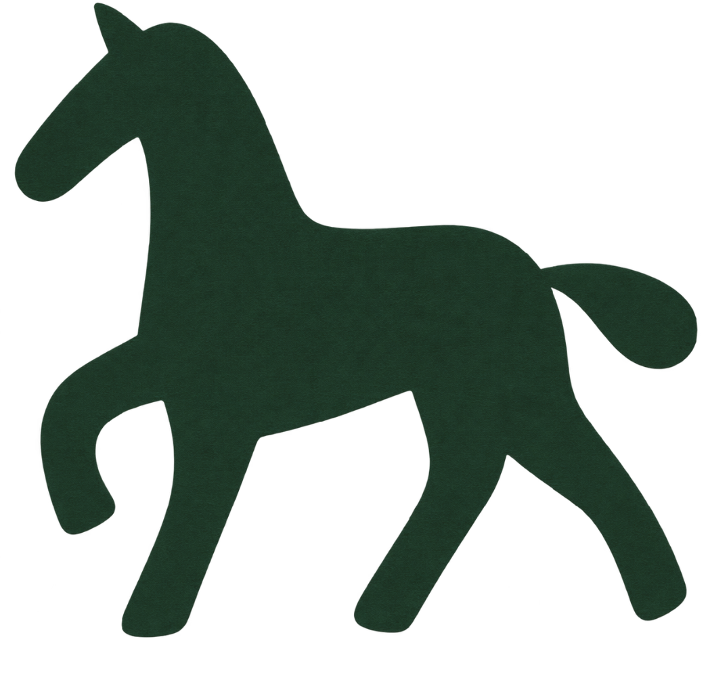
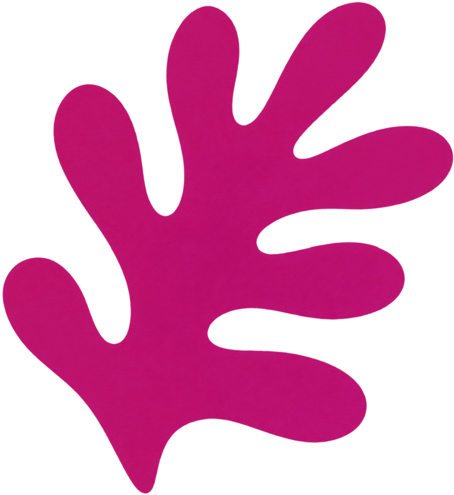
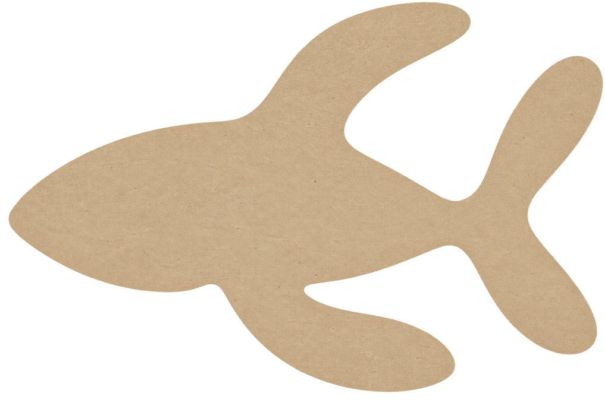

<meta charset="UTF-8">
<title>María Méndez — About</title>
<meta name="viewport" content="width=device-width, initial-scale=1.0">
<link rel="icon" type="image/png" href="assets/favicon.png">

<link rel="stylesheet" href="styles/variables.css">
<link rel="stylesheet" href="styles/base.css">
<link rel="stylesheet" href="styles/components.css">
<link rel="stylesheet" href="styles/page-about.css">

<!-- ─── NAV ─────────────────────────────────────────────────── -->
<nav class="comp-nav">
  <a class="comp-nav__logo" href="work.html">Maria Mendez</a>
  <ul class="comp-nav__links">
    <li><a href="work.html">Work</a></li>
    <li class="is-active"><a href="about.html">About</a></li>
    <li><a href="https://shop.mariamariass.com" target="_blank" rel="noopener">Shop</a></li>
    <li><a href="contact.html">Contact</a></li>
  </ul>
  <div class="comp-nav__dot"></div>
</nav>

<!-- ─── PAGE ─────────────────────────────────────────────────── -->
<main class="page-about">

  <!-- HERO -->
  <section class="comp-about-hero">

    <!-- BIO BLOCK -->
    <div class="comp-bio-block">
      <h1 class="about-title">About</h1>
      <p class="about-tagline">Somewhere between nature, imagination and everything wild, weird and beautiful we leave behind.</p>
      <p class="about-bio">Maria Mendez is a graphic designer, textile artist and illustrator working across identity, campaigns, packaging, fashion and surface design. Her practice moves freely between graphic systems, textiles, objects and images, always looking for new ways to turn an idea into something tangible.</p>
      <p class="about-bio">Nature is probably the biggest inspiration behind her work — animals, plants, landscapes, strange little details and the endless ways the world grows and transforms. But she is equally fascinated by what humans create: objects, architecture, traditions, symbols, clothes and all the imperfect, unexpected things we leave behind. Color, shape, texture and pattern become tools to collect these observations and turn them into visual stories that feel curious, tactile and alive.</p>
      <a class="cta-link" href="work.html">View Selected Work →</a>
    </div>

    <!-- BAGS -->
    <div class="about-bags-area" data-lightbox-group>
      <div class="comp-transparent-bag comp-transparent-bag--1" data-lightbox-src="assets/images/About1.jpeg" data-lightbox-alt="María Méndez — proyecto 1">

        <div class="bag-fill bag-fill--1"></div>
      </div>

      <div class="comp-transparent-bag comp-transparent-bag--2" data-lightbox-src="assets/images/About2.jpeg" data-lightbox-alt="María Méndez — proyecto 2">

        <div class="bag-fill bag-fill--2"></div>
      </div>

    </div>
  </section>

  <hr class="page-divider"/>

  <!-- STUDIO VALUES -->
  <section class="comp-studio-values">
    <div class="studio-values__label">Studio <br>Values</div>
    <div class="studio-values__columns">

      <div class="studio-value-item">
        <div class="value-icon"></div>
        <div class="value-title">Curiosity</div>
        <p class="value-desc">Look closer. Ask why. Follow the weird little detail.</p>
      </div>

      <div class="studio-value-item">
        <div class="value-icon"></div>
        <div class="value-title">Craft</div>
        <p class="value-desc">Good ideas deserve to become good things — beautifully made and thoughtfully considered.</p>
      </div>

      <div class="studio-value-item">
        <div class="value-icon"></div>
        <div class="value-title">Story</div>
        <p class="value-desc">Everything has a story. We just have to find the right way to tell it.</p>
      </div>

      <div class="studio-value-item">
        <div class="value-icon"></div>
        <div class="value-title">Color</div>
        <p class="value-desc">Color is never just decoration. It has mood, memory, attitude and a life of its own.</p>
      </div>

      <div class="studio-value-item">
        <div class="value-icon"></div>
        <div class="value-title">Play</div>
        <p class="value-desc">Experiment, make a mess, change direction. Sometimes the best ideas happen by accident.</p>
      </div>

    </div>
  </section>

</main>

<script src="scripts/gallery.js"></script>
